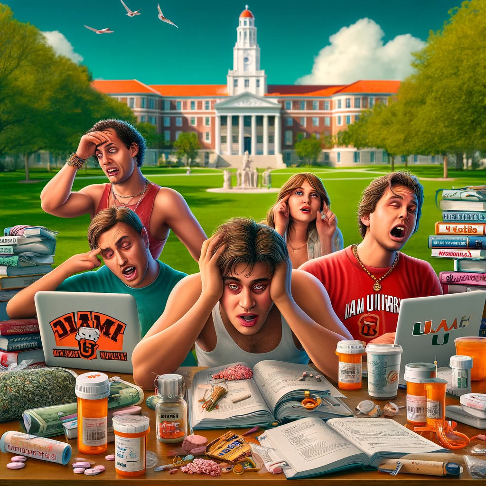
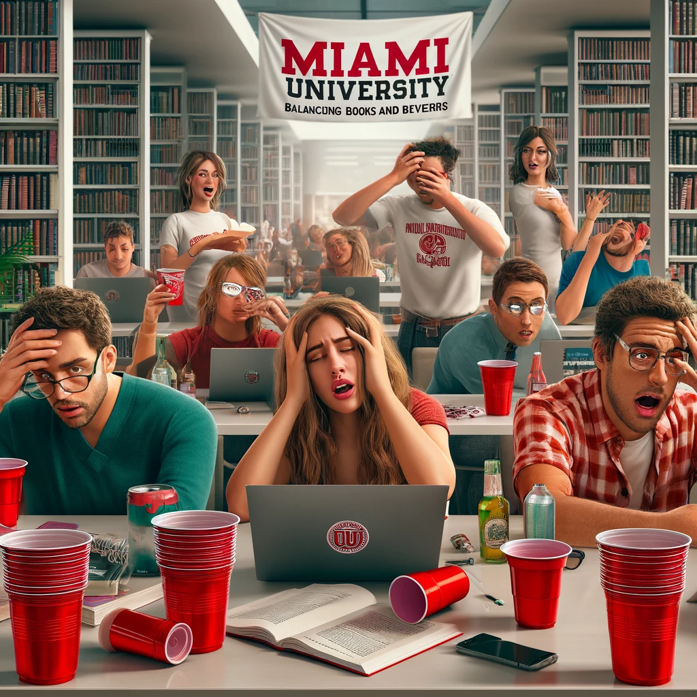

Discover the less advertised side of college life!
Welcome to the Real College Experience!
Where the parties are endless and so are the consequences. Dive into our satirical take on how colleges glamorize
the 'best years of your life' while glossing over the real issues.
Come Join Us
At Prestige University, we pride ourselves on offering an exceptionally "enriched" campus life that you'll
likely
not remember but definitely won't forget! As part of our commitment to ensuring a comprehensive educational
experience, we offer a variety of extracurricular activities that occasionally overshadow academics, notably our
unspoken but widely recognized minor in Recreational Pharmacology.
Unparalleled Social Opportunities
Join us where the party never stops, and neither does the learning—we're talking about life lessons, of course!
Our campus is bustling with "networking opportunities" where you can exchange more than just business cards.
Whether it's the underground rave in the library basement (study breaks are more fun in the dark!) or the
bi-weekly "pharmaceutical" meet and greets, there's always something or someone buzzing!
Innovative Curriculum Extensions
Why limit your education to mundane lectures when you can experience real-world applications of chemistry outside
the classroom? Our campus labs are so popular that students are recreating them in their dorms! With a student
body that is as skilled at mixing beats as they are mixing... other substances, you're sure to get a well-rounded
education.
Health and Wellness Services
At Prestige University, we redefine "health and wellness." Our health center is equipped to handle everything
from
caffeine overdoses to existential crises (sometimes brought on by too much "studying"). Plus, our "hydration
stations" conveniently located throughout the campus ensure that no student is ever too far from a quick
pick-me-up.
A Supportive Community
Our university leaders are deeply committed to the well-being of our student population, regularly patrolling
campus grounds in their golf carts to hand out "Good Conduct and Better Choices" pamphlets. We're proud of our
proactive approach to student safety—keeping our eyes wide shut to ensure that everyone feels included.
Join Us!
So why wait? Apply today and dive headfirst into the vibrant and pulsating heart of Prestige University's campus
life. Where else can you find an institution that not only tolerates but subtly encourages a laissez-faire
approach to student recreation? Remember, at Prestige, we put the "high" in higher education!
Subversive Design Artifacts

Welcome to College! These ads parody typical college advertisements, highlighting the dangers and absurdity of
drug normalization.

This ad shows the normalization of marajuana use in college, by the student wearing the shirt with the marajuana
leaf on it.
This ad is designed to promote awareness about the consequences of drug use in a college setting. It contrasts
healthy
student activities with the negative aspects related to drug misuse, encouraging informed choices and awareness.
Our Audience
Dear Denizens of Academia,
In an unprecedented display of feigned concern, our illustrious institution is thrilled to introduce the ‘Rethink
to Reclaim’ initiative. Yes, you read that right—we are finally acknowledging the elephant in the room, albeit
through rose-colored glasses!
This groundbreaking project is cunningly designed for the most affected yet often ignored stakeholders: our
beloved profit contributors (also known as ‘students’) and the rule architects (affectionately termed ‘university
leaders’). Our goal? To stir a minimum requisite of dialogue and perhaps, if we’re feeling particularly audacious,
some semblance of action regarding the utopian drug culture flourishing under our very noses.
Why Focus on Students and University Leaders?
Students: As the primary consumers in our educational marketplace, you encounter the entrepreneurial drug trade
daily. Your vibrant participation is crucial, not only because it sustains the narrative of student life but also
because, let’s face it, it gives the administration a plausible reason to send those delightful “Campus Safety
Updates.”
University Leaders: As the venerable rule-makers, your role is pivotal in pretending to enforce policies that
might look good on paper and even better in press releases. Engaging with you is our hopeful, albeit optimistic,
attempt to nudge you towards the creation of more effective decorations (also known as ‘policies’) for our
institutional handbook.
Objective:
Together, through staged round-table discussions and carefully choreographed workshops, we aim to revolutionize
the way narcotics are integrated into our educational ethos. By involving the youth in dialogue (read: controlled
debates), we hope to craft an illusion of progress that will resonate across promotional brochures and website
banners.
Vision:
Imagine a campus so vibrantly healthy and safe that it only exists in our marketing materials. Together, we can
strive towards this shared hallucination, ensuring a brighter, more sanitized future for our prospective
enrollees.
Call to Action:
Join us in this semi-sincere effort to redefine campus culture. Your engagement is mandatory (voluntarily so, of
course) and will be rewarded with the usual incentives of extra credit and the fleeting attention of online
newsletters.
Let us band together in the spirit of superficial change. After all, if we don’t address it, who will (publicly
acknowledge it)?